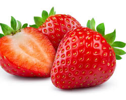

Beneficios de la Fresa

Las fresas son una fruta deliciosa y saludable, conocida por sus numerosos beneficios:
- Ricas en vitamina C, que fortalece el sistema inmunológico y actúa como antioxidante.
- Fuente de fibra, que mejora la digestión y ayuda a mantener niveles saludables de colesterol.
- Contienen antioxidantes, como flavonoides, que protegen contra el daño celular y reducen el riesgo de enfermedades crónicas.
- Proporcionan manganeso, que es importante para la salud ósea y el metabolismo.
- Contienen folato, que es esencial para la formación de glóbulos rojos y la salud celular.
¡Incorpora fresas a tu dieta para disfrutar de sus beneficios y mantener una buena salud!
Volver a la página principal